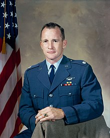

GRANDES FRASES EN LA HISTORIA DEL ESPACIO EXTERIOR
"Mirar hacia arriba y no hacia abajo; mirar hacia
adelante y no hacia atrás; mirar hacia fuera y no solo dentro;
y dar la bienvenida al futuro con valor y optimismo."

Edward White (Comandante del Apolo 1)
"El cosmos es dentro de nosotros. Estamos hechos de polvo de estrellas.
Somos una forma de que el universo se conozca a sí mismo."